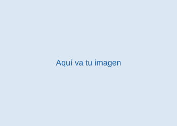

Bienvenido a mi página
Inicio
Plan de estudios: AQUÍ ESTÁ EL PLAN.¡¡HOLA!! Aquí encontrarás todo lo que necesitas para aprobar la materia de Multimedia con el profe José Antonio.
Si reprobaste y estás recursando por hacerme caso, es tu culpa.
|| Himno del IPN ||
¿No carga el video? Ábrelo en YouTube
Letra
Politécnico, fragua encendida
con la chispa del genio creador
en ti forja su nueva estructura
nuestra noble y pujante nación.
En la aurora de un día venturoso
te dio vida la Revolución;
una estrella te puso en las manos,
¡que no apague su limpio fulgor!
(CORO)
Su libertad México crea,
surge la Patria, nace la luz;
nos convoca tu voz, Politécnico,
nos conduce tu amor, juventud.
En dinámico anhelo conjugas
las dos fuerzas de un mundo viril:
es la ciencia crisol de esperanzas
es la técnica, fuerza motriz.
Guinda y blanco, indómita almena
que defiende tu ardor juvenil,
oriflama en las lides gallardas
en tus manos triunfal banderín.
(CORO)
Tus brigadas de nítida albura
ciencia augusta, saber bondad,
en su diaria tarea resplandecen
Energía que modelas paisajes
insurgente y activo soñar,
un humano concepto sostiene
tu cultura de ser integral.
(CORO)
Mueve al hombre tu fe constructiva,
se oye el ritmo de su despertar,
sinfonía de las urbes fabriles
alma agreste de un himno rural.
Corazón valeroso y ardiente
que edificas baluarte de paz,
solidaria su acción con tus filas,
vive el pueblo tu hermosa verdad.
Unidad 1 · Primer ordinario · Contexto de la multimedia para aplicaciones informáticas
¿QUÉ ES LA MULTIMEDIA?
ESTO ES LO QUE VERÁS
Qué es la multimedia, de dónde viene, cuáles son sus elementos y formatos, cómo se produce un proyecto multimedia paso a paso, y cómo la animación da vida a todo, incluso a la realidad virtual.
Unidad de competencia: integra los elementos que caracterizan la multimedia al proceso de producción multimedia, de acuerdo con las bases que rigen la multimedia.
1.1 Antecedentes y fundamentos de las herramientas multimedia
Este tema sienta las bases conceptuales, históricas y técnicas indispensables para comprender cómo se integran y procesan los medios digitales en el desarrollo de aplicaciones informáticas.
Un medio constituye un canal individual de transmisión de información, como el texto o el audio aislados. La multimedia representa la combinación e integración de múltiples medios de expresión y comunicación interactuando a través de sistemas informáticos. Sus componentes fundamentales incluyen:
Medio básico para la transmisión de información estructurada y datos.
Representaciones visuales estáticas: mapas de bits (basados en píxeles) y gráficos vectoriales (escalables sin pérdida de calidad).
Medios sonoros procesados digitalmente: música, efectos de sonido y voz grabada.
Secuencias de imágenes en movimiento, acompañadas o no de sonido.
Generación de movimiento visual mediante secuencias de cuadros fijados o calculados por computadora.
La relación armónica entre estos medios y el grado de interactividad brindado al usuario son determinantes para enriquecer la experiencia de usuario.
Analiza la transformación histórica de la representación visual y las interfaces en los sistemas de cómputo:
Transición desde interfaces basadas en texto e imágenes vectoriales bidimensionales hacia entornos tridimensionales renderizados en tiempo real.
Desarrollo de GPU, aceleración por hardware y APIs gráficas como OpenGL o DirectX, para modelado, sombreado e iluminación en tiempo real.
De un rol decorativo a una disciplina fundamental para Realidad Virtual, Realidad Aumentada, simulaciones y videojuegos.
Estudia el papel de Internet como el canal principal para la distribución y consumo masivo de contenidos multimedia:
De la Web 1.0 (páginas estáticas) a HTML5 y WebGL, que reemplazaron plugins como Flash con audio/video nativo y gráficos 3D en el navegador.
Transmisión masiva de datos mediante streaming, compresión adaptativa y control de latencia y ancho de banda.
Comprende los fundamentos técnicos sobre cómo se codifica, comprime y almacena la información multimedia:
Lossy vs. Lossless: en compresión con pérdida (JPEG, MP3) se descarta información no perceptible para reducir el tamaño; en compresión sin pérdida (PNG, WAV) no se pierde ningún dato original. La elección busca equilibrar calidad, bitrate, tiempo de carga y compatibilidad.
Ráster: JPEG, PNG, WEBP. Vectorial: SVG.
Comprimidos: MP3, AAC. Sin comprimir: WAV, FLAC.
Códecs: H.264, H.265/HEVC, VP9, AV1. Contenedores: MP4, MKV, MOV.
Plano (TXT), marcado web (HTML), intercambio de datos (JSON), UTF-8.
1.2 Proceso de producción multimedia
Esta unidad temática orienta la integración de los elementos multimedia dentro del proceso formal de producción para aplicaciones e investigaciones informáticas.
Comprende la identificación de los componentes interactivos y la estructuración del ciclo de vida del proyecto a través de sus etapas metodológicas:
Planeación, guion y organización previa del proyecto.
Captura y generación del material multimedia.
Edición, integración y ajuste final del contenido.
Aborda la producción audiovisual orientada al manejo técnico de la cámara, incluyendo la aplicación práctica de encuadres, composición visual, planos cinematográficos y fotográficos, tomas, movimientos de cámara, así como cortes y transiciones con herramientas multimedia.
Se enfoca en la edición y tratamiento digital de recursos gráficos, aplicando las reglas del lenguaje visual, la composición y el análisis semiótico para la transmisión efectiva de significados mediante imágenes estáticas y dinámicas en aplicaciones informáticas.
Comprende el procesamiento, edición y optimización digital de señales sonoras (voz, música y efectos de sonido), abarcando el ajuste técnico de formatos, niveles y frecuencias para su correcta integración en producciones audiovisuales y aplicaciones multimedia.
1.3 Animación en la multimedia
Este tema explica qué es la animación, qué tipos existen y cómo se produce cada uno.
Animar significa dar vida o movimiento. Técnicamente, una animación es una secuencia de imágenes fijas que, mostradas muy rápido una tras otra, nuestro cerebro percibe como movimiento continuo.
Cada una de las imágenes fijas que forman la animación.
Qué tan rápido pasan las imágenes: el cine usa 24 fps y los videojuegos 60 o más.
Las poses importantes; los cuadros intermedios se completan a mano o por computadora (interpolación).
Organiza cuándo ocurre cada cambio de posición, color o forma.
Los 12 principios de la animación, publicados por los animadores de Disney Frank Thomas y Ollie Johnston (1981), como «estirar y encoger» o «anticipación», todavía guían a los animadores.
Según la técnica que se usa, la animación se clasifica en:
Dibujada a mano cuadro por cuadro, como las películas clásicas de Disney.
Dibujos y vectores animados en la computadora, con herramientas como Toon Boom o Adobe Animate.
Objetos reales o plastilina que se mueven poco a poco y se fotografían cuadro por cuadro.
Modelos creados en la computadora que se pueden ver desde cualquier ángulo, como en Pixar o los videojuegos.
Texto, formas y gráficos animados para intros, comerciales e interfaces.
Se dibuja encima de un video real para copiar movimientos naturales.
Aunque cambian las herramientas, casi todas las animaciones pasan por tres etapas:
Idea, guion, storyboard (viñetas de cada escena), animatic y diseño de personajes.
2D: dibujar cuadros clave e intermedios. Stop motion: mover y fotografiar. 3D: modelar, texturizar, poner esqueleto (rigging), animar e iluminar.
Render, composición, efectos, sonido y edición final.
En 3D hay más trabajo antes de animar, porque hay que construir el personaje y darle un esqueleto digital, pero después se puede mover y ver desde cualquier ángulo.
1.4 La animación y la realidad virtual
Este tema muestra qué herramientas se usan para animar y por qué la animación es la base de la realidad virtual.
Las herramientas de animación pueden ser abiertas (de código abierto o con formatos libres: cualquiera puede usarlas, estudiarlas y mejorarlas) o cerradas (propietarias: pertenecen a una empresa y normalmente se paga una licencia).
Blender (3D), Krita, OpenToonz y Synfig (2D), y formatos libres como glTF y SVG.
Autodesk Maya y 3ds Max, Adobe Animate y After Effects, Cinema 4D y Toon Boom Harmony.
Son gratuitas, tienen comunidades grandes y no dependes de una sola empresa.
Tienen soporte técnico y son el estándar en muchos estudios profesionales.
Un mundo virtual es, en el fondo, una animación 3D que se calcula en tiempo real: en vez de reproducir cuadros ya hechos, la computadora dibuja cada fotograma según hacia dónde mires y lo que hagas.
La RV necesita dibujar al menos de 72 a 90 cuadros por segundo para que el movimiento sea fluido y no maree.
Los personajes y objetos reaccionan a ti, combinando animaciones grabadas con física.
Se graban los movimientos de actores reales para animar personajes; los visores usan un seguimiento parecido para tu cabeza y tus manos.
Los modelos y animaciones hechos en Blender o Maya se llevan a Unity o Unreal para crear la RV.
Por eso este tema conecta con la Unidad 2: lo que aprendes de animación es lo que da vida a los entornos virtuales, como el perrito 3D de esa unidad.
PA' QUE ESTÉ MÁS CLARO
Desde la estructura del texto y el detalle de un píxel hasta la complejidad de una animación tridimensional, la MULTIMEDIA cobra vida a través de la potencia de procesamiento gráfico moderno.
Además pasarás de la teoría a la práctica, porque el profesor te va a dejar hacer justo esto la primera clase.
Unidad 2 · Segundo ordinario · Tecnologías emergentes en las herramientas multimedia
REALIDAD AUMENTADA
ESTO ES LO QUE VERÁS
Cómo surgió la realidad virtual y en qué se diferencia de la realidad aumentada, qué son los entornos virtuales y con qué herramientas se crean, qué lenguajes se usan para programarlos y cómo se integran estas tecnologías emergentes en aplicaciones reales.
Unidad de competencia: diseña entornos reales y virtuales a partir del uso de herramientas multimedia y tecnologías emergentes de desarrollo.
2.1 Antecedentes de la realidad virtual
Este tema revisa el origen de la realidad virtual, sus características y en qué se distingue de otras tecnologías inmersivas como la realidad aumentada.
La realidad virtual (RV) es un entorno tridimensional generado por computadora que sustituye por completo lo que el usuario ve y oye, y con el que puede interactuar en tiempo real como si estuviera dentro de él. Grigore Burdea y Philippe Coiffet la resumen en tres características, conocidas como las «tres I»:
La sensación de estar dentro del mundo virtual, gracias a visores, audio espacial y seguimiento de la cabeza.
El usuario actúa sobre el entorno (toma, mueve, camina) y este responde en tiempo real.
El entorno puede representar lugares reales, imposibles o que todavía no existen.
Antecedentes: la RV tiene más de 60 años de historia.
Morton Heilig crea el Sensorama, una cabina con imagen 3D, sonido, viento y olores.
Ivan Sutherland construye «La espada de Damocles», el primer casco con gráficos por computadora.
Jaron Lanier populariza el término «realidad virtual» y vende los primeros guantes y visores.
Oculus Rift y HTC Vive llevan la RV a los consumidores.
Visores autónomos como Meta Quest funcionan sin computadora ni cables.
Ejemplo interactivo: al final de esta unidad hay un perrito en 3D hecho solo con figuras básicas (esferas, cilindros y toros) usando Three.js. Puedes girarlo y acercarte: interactuar en tiempo real con un objeto tridimensional es justo lo que hace la RV, solo que con un visor el mundo entero te rodea. Ver el perrito 3D ↓
Paul Milgram y Fumio Kishino (1994) propusieron el continuo de la virtualidad: una línea que va del mundo totalmente real al totalmente virtual. En medio están estas tecnologías:
Entorno 100 % digital que aísla al usuario del mundo real. Se usa con visores.
El mundo real es el protagonista y se le agregan capas digitales. Se usa con el celular o lentes. Según Ronald Azuma (1997), combina lo real y lo virtual, es interactiva en tiempo real y está registrada en 3D.
Los objetos virtuales interactúan con el entorno real: chocan con paredes o se esconden detrás de los muebles.
Ejemplo rápido: un videojuego dentro de un visor es RV; un filtro de Instagram es RA; un holograma que se esconde detrás de tu sillón es RM.
Las tecnologías emergentes casi nunca trabajan solas: se combinan (se hibridan) para crear experiencias más completas.
Nombre que agrupa a la RV, la RA y la RM; muchos visores ya pasan de una a otra.
La cámara reconoce objetos, rostros o texto y, por ejemplo, traduce un letrero en tiempo real.
El mundo virtual se calcula en servidores y llega por internet, así el visor puede ser más ligero.
Una copia virtual de una fábrica o ciudad que se actualiza con datos reales de sensores (IoT).
2.2 Entornos virtuales
Esta unidad temática estudia cómo se crean y recorren los espacios virtuales, qué software y equipo se usa, y en qué áreas se aplican.
Un entorno virtual es un espacio tridimensional generado por computadora en el que una persona puede moverse, mirar a su alrededor e interactuar con objetos en tiempo real (Sherman y Craig, 2018). Puede representar un lugar real, como un museo o un salón, o uno que no existe.
Todo entorno virtual tiene estos componentes:
Los modelos del lugar y de los objetos que hay en él.
El punto de vista de quien lo recorre; a veces se representa con un personaje.
La forma de moverse: caminar, volar o «teletransportarse» de un punto a otro.
Tocar, abrir, mover o recoger objetos, y que el entorno responda.
Imagen, sonido y a veces vibración que reaccionan a lo que hace el usuario.
Según el equipo que se usa, hay tres niveles de inmersión:
En la pantalla de una computadora o celular, con mouse, teclado o dedo.
Pantallas grandes o curvas que llenan parte de la vista, como los simuladores de vuelo.
Un visor de RV cubre toda la vista y sigue los movimientos de la cabeza.
Mientras más inmersivo es, más fuerte es la sensación de presencia: la impresión de «estar ahí» aunque uno sepa que es una simulación (Slater y Sanchez-Vives, 2016). Para lograrla no basta con buenos gráficos: el entorno tiene que responder rápido, porque un retraso entre el movimiento y la imagen rompe la ilusión y puede marear (Jerald, 2015).
Un recorrido virtual permite explorar un lugar real o imaginario desde la computadora, el celular o un visor, como si caminaras por él.
Cámaras con dos lentes capturan todo alrededor; Google Street View es el ejemplo más conocido.
Con muchas fotos o un sensor LiDAR se reconstruye un lugar u objeto en 3D.
Botones dentro del recorrido (hotspots) que muestran información, audio o video.
Saltar de una escena a otra, caminar o «teletransportarse» dentro de la RV.
¿Cómo se hace un recorrido virtual? Normalmente en cuatro pasos:
Se toman fotos 360° desde varios puntos del lugar, o se escanea en 3D.
Las fotos de cada punto se «cosen» (stitching) para formar un panorama completo.
Se enlazan los panoramas entre sí y se agregan puntos de interés con información.
Se sube a una página web o se exporta para verlo con un visor de RV.
Se usan en museos virtuales, recorridos de escuelas y universidades, venta de casas y turismo.
Estos programas sirven para modelar, armar y publicar espacios virtuales:
Programa libre y gratuito para modelar, texturizar y animar en 3D.
Modelado 3D sencillo, muy usado en arquitectura e interiores.
Escanea espacios reales y los convierte en recorridos 3D.
Crea recorridos 360° con puntos de interés, planos y audio.
Permite crear escenas de RV en la web escribiendo etiquetas parecidas a HTML.
Para vivir o crear RV y RA se necesita equipo (hardware) y kits de desarrollo (software):
Meta Quest: funcionan sin computadora y también hacen realidad mixta.
HTC Vive o Valve Index: más potencia gráfica, conectados a una computadora.
Apple Vision Pro: mezcla ventanas y objetos 3D con tu entorno real.
La forma más común de usar RA, con la cámara y los sensores del equipo.
ARCore (Google), ARKit (Apple) y Vuforia resuelven el seguimiento de la cámara.
OpenXR para visores y WebXR para RV y RA directamente en el navegador.
En RA, el sistema sabe dónde colocar los objetos virtuales usando marcadores (imágenes o códigos QR), detección de superficies (SLAM) o la ubicación GPS, como en Pokémon GO.
Los entornos virtuales ya se usan en muchas áreas, no solo en los videojuegos:
Explorar el cuerpo humano, el sistema solar o una molécula en 3D.
Practicar cirugías y tratar fobias en un entorno seguro.
Capacitar trabajadores y ver manuales sobre la máquina real.
Recorrer un edificio antes de construirlo.
Probar muebles en tu casa o ver cómo te queda la ropa antes de comprar.
Videojuegos, conciertos virtuales y filtros de redes sociales.
Museos y zonas arqueológicas que se visitan desde casa.
Un motor de videojuegos es un programa que ya resuelve lo más difícil (gráficos, física, sonido y controles) para que el desarrollador se concentre en el contenido. Son la herramienta principal para crear RV y RA.
Se programa en C#. Muy usado en juegos para celular, RV y RA (con AR Foundation).
Se programa en C++ o con Blueprints (bloques visuales). Gráficos fotorrealistas; también se usa en cine y arquitectura.
Libre, gratuito y ligero; usa su propio lenguaje, GDScript.
Bibliotecas para 3D en la web; con Three.js está hecho el perrito del tema 2.1.1.
Para elegir un motor conviene pensar en tres cosas: en qué dispositivos va a correr el proyecto (celular, computadora, visor o web), qué lenguaje se domina y qué tanta calidad gráfica se necesita. Unity y Unreal son gratuitos para estudiantes y proyectos pequeños, y Godot es libre y gratuito siempre (Gregory, 2018).
Todos funcionan con un ciclo de juego (game loop): leen los controles, actualizan el mundo y dibujan la pantalla decenas de veces por segundo.
2.3 Desarrollo en las herramientas multimedia
Esta unidad temática presenta los lenguajes con los que se programan las aplicaciones multimedia, tanto en la web como en la computación gráfica.
En la web, cada lenguaje tiene un papel:
Da la estructura y trae etiquetas multimedia como <audio>, <video> y <canvas>.
Controla el diseño, los colores y las animaciones, como el fondo de perritos de esta página.
Agrega interactividad; con WebGL y Three.js puede dibujar en 3D.
Corre en el servidor: procesa formularios, guarda datos y sube archivos.
Esta página es un ejemplo: HTML para la estructura, CSS para el diseño y el modo oscuro, y JavaScript para las pestañas, el traductor y el modelo 3D.
Para gráficos y visión por computadora se usan herramientas más cercanas a la tarjeta de video:
Estándar para dibujar 2D y 3D con la GPU; WebGL está basado en él y Vulkan es su sucesor.
Biblioteca de visión por computadora: detecta rostros, objetos y marcadores; es clave en la RA.
Lenguaje sencillo para usar OpenCV, procesar imágenes y automatizar Blender.
Pequeños programas que corren en la GPU y calculan la luz y el color de cada píxel.
2.4 Creación de herramientas multimedia con el uso de tecnologías emergentes
Esta unidad temática une todo lo anterior: cómo se prepara el ambiente de trabajo, cómo se integran las tecnologías y cómo se usan las aplicaciones desde los dos lados.
Un ambiente de desarrollo es el conjunto de programas con los que se crea una aplicación:
Visual Studio Code, para escribir HTML, JavaScript, Python o C#.
Unity Editor y Unreal Editor, para armar escenas 3D.
Android Studio y Xcode, para compilar y probar en celulares.
Blender para modelos 3D y Git o GitHub para guardar versiones del proyecto.
Una aplicación de RV o RA se arma por etapas:
Se crean los objetos 3D en Blender y se exportan en formatos como glTF/GLB o USDZ.
Se arma la escena en Unity, Unreal o Three.js.
Se conecta OpenXR, ARCore, ARKit o WebXR para el seguimiento y los visores.
Se prueba en el dispositivo real: rendimiento, comodidad y que no maree.
Se sube a una tienda de aplicaciones o a la web.
Por dentro, el sistema necesita cámara y sensores (acelerómetro, giroscopio, GPS, LiDAR), un procesador gráfico y una pantalla, y en el software hace tres pasos: seguimiento (saber dónde está el usuario), registro (alinear lo virtual con lo real) y renderizado (dibujar).
Una misma aplicación se ve distinto según el lado desde el que la uses:
Usas filtros, juegos y recorridos; te importa que sea fácil, cómodo y útil.
Diseñas, programas, pruebas y publicas; piensas en rendimiento, accesibilidad y privacidad.
Los principales retos al desarrollar son el consumo de batería, la precisión del seguimiento con poca luz, la privacidad (la cámara siempre está encendida) y el mareo que pueden causar algunas experiencias de RV.
¿Qué tecnologías emergentes soporta tu dispositivo?
Antes de usar una tecnología emergente, un desarrollador revisa si el dispositivo del usuario la tiene, y si no, ofrece otra opción. A esto se le llama detección de capacidades. Esta tabla la hace en tu equipo en este momento:
| Tecnología | En tu dispositivo | Para qué sirve |
|---|
PA' QUE ESTÉ MÁS CLARO
La realidad virtual te mete en otro mundo; la realidad aumentada pone cosas del mundo digital en el tuyo. Si usas un filtro de Instagram con orejas de perrito, eso es RA; si te pones un visor y apareces en una montaña rusa, eso es RV.
En esta unidad aprendes con qué se construyen las dos: modelos 3D, motores de videojuegos y lenguajes como HTML, JavaScript o Python. Como el perrito 3D del tema 2.1.1.
No se pudo cargar el modelo 3D: se necesita internet para descargar Three.js.
Unidad 3 · Tercer ordinario
MULTIMEDIA EN LA INFORMÁTICA
ESTO ES LO QUE VERÁS
Cómo se usa la multimedia dentro del software: interfaces, páginas web, videojuegos y aplicaciones, además de las tendencias actuales y las reglas para usarla de forma accesible, ética y legal.
3.1 La multimedia en el desarrollo de software
Este tema muestra cómo los elementos multimedia se integran en los programas que usamos todos los días para hacerlos más claros, atractivos y fáciles de usar.
La interfaz gráfica (GUI) es la parte del software que el usuario ve y toca. La multimedia hace que la interfaz comunique mejor y que la experiencia de usuario (UX) sea agradable:
Íconos, tipografía, colores e imágenes que guían al usuario.
Pequeñas animaciones y sonidos que confirman una acción, como un “me gusta”.
La interfaz se adapta a celulares, tabletas y computadoras.
Algunos principios básicos son la consistencia, la retroalimentación inmediata y una jerarquía visual clara.
Hoy el navegador reproduce multimedia sin plugins gracias a los estándares web:
Etiquetas <img>, <audio> y <video> para insertar medios de forma nativa.
Dibujo de gráficos por código: mapas de bits con canvas y vectores con SVG.
Transiciones y animaciones sin necesidad de programar.
Web Audio API para sonido y WebGL para gráficos 3D.
Esta misma página usa SVG para los íconos, un <iframe> para el video del himno y CSS para animar el fondo de perritos.
Los videojuegos son el ejemplo más completo de multimedia: integran gráficos, animación, audio, video e interactividad al mismo tiempo.
Unity, Unreal Engine y Godot facilitan crear juegos y simuladores.
El “game loop” lee controles, actualiza el mundo y dibuja la pantalla muchas veces por segundo.
Entrenamiento de pilotos, médicos o conductores en entornos virtuales seguros.
3.2 Tendencias, ética y buenas prácticas
Esta unidad temática revisa hacia dónde va la multimedia y las responsabilidades que implica crearla y publicarla.
El streaming permite reproducir audio y video mientras se descargan, sin esperar el archivo completo:
Protocolos como HLS y DASH ajustan la calidad según tu velocidad de internet.
Redes de servidores repartidos por el mundo que entregan el contenido desde el más cercano.
YouTube, Netflix, Twitch y Spotify son ejemplos de streaming a gran escala.
La inteligencia artificial cambió la forma de crear y editar contenido multimedia:
Creación de imágenes, voz, música y video a partir de texto.
Quitar fondos, mejorar audio o generar subtítulos automáticamente.
Aumentar la resolución de imágenes y videos antiguos.
También trae riesgos, como los deepfakes (videos falsos muy realistas), por lo que hay que usarla con responsabilidad.
Un contenido multimedia accesible puede ser usado por todas las personas, incluidas las que tienen alguna discapacidad. Las pautas WCAG recomiendan:
Describir las imágenes para quien usa un lector de pantalla.
Para personas sordas o para ver videos sin sonido.
Texto legible con buen contraste, como en el modo oscuro de esta página.
Que todo funcione sin mouse, por ejemplo cerrar ventanas con Esc.
No todo lo que está en internet se puede usar libremente. Antes de usar una imagen, canción o video hay que revisar su licencia:
Protegen la obra desde que se crea; usarla sin permiso puede ser ilegal.
Licencias que permiten usar obras bajo ciertas condiciones: atribución (BY), compartir igual (SA), no comercial (NC) y sin obras derivadas (ND).
Obras que ya se pueden usar libremente, siempre citando la fuente.
PA' QUE ESTÉ MÁS CLARO
La multimedia está en casi todo lo que haces en una computadora: desde los íconos de tu celular hasta la serie que ves en streaming.
Saber usarla bien, y de forma accesible y legal, es lo que hace que un programa se vea y se sienta profesional.

ENTORNO VIRTUAL
Próximamente: aquí se montará un entorno virtual.
REFERENCIAS
Anthropic. (2026). Claude (versión Opus 5.5) [Modelo de lenguaje de gran tamaño]. https://claude.ai
Azuma, R. T. (1997). A survey of augmented reality. Presence: Teleoperators and Virtual Environments, 6(4), 355–385. https://doi.org/10.1162/pres.1997.6.4.355
Blender Foundation. (s.f.). Manual de Blender. https://docs.blender.org/manual/es/latest/
Burdea, G. C. y Coiffet, P. (2003). Virtual reality technology (2.ª ed.). Wiley-Interscience.
de Vega, A. (2017). Animación de elementos. Alfaomega.
Epic Games. (s.f.). Documentación de Unreal Engine. https://dev.epicgames.com/documentation/es-es/unreal-engine
GitHub. (s.f.). Acerca de GitHub Pages. GitHub Docs. https://docs.github.com/es/pages/getting-started-with-github-pages/about-github-pages
Glover, J. y Linowes, J. (2019). Complete virtual reality and augmented reality development with Unity. Packt Publishing.
Godot Engine. (s.f.). Documentación de Godot Engine. https://docs.godotengine.org/es/stable/
Gregory, J. (2018). Game engine architecture (3.ª ed.). CRC Press.
Instituto Politécnico Nacional [@IPNoficial]. (s.f.). Himno del #IPN [Video]. YouTube. https://www.youtube.com/watch?v=9aHyfqdOUnQ
Instituto Politécnico Nacional. (2021). Programa de estudios: Herramientas multimedia. Licenciatura en Ciencias de la Informática, plan 2021 [Documento institucional]. Unidad Profesional Interdisciplinaria de Ingeniería y Ciencias Sociales y Administrativas.
Jerald, J. (2015). The VR book: Human-centered design for virtual reality. Association for Computing Machinery; Morgan & Claypool.
Khronos Group. (s.f.-a). OpenXR overview. https://www.khronos.org/openxr/
Khronos Group. (s.f.-b). WebGL overview. https://www.khronos.org/webgl/
Marschner, S. y Shirley, P. (2016). Fundamentals of computer graphics (4.ª ed.). CRC Press.
Milgram, P. y Kishino, F. (1994). A taxonomy of mixed reality visual displays. IEICE Transactions on Information and Systems, E77-D(12), 1321–1329.
Mozilla. (s.f.-a). Using CSS custom properties (variables). MDN Web Docs. https://developer.mozilla.org/en-US/docs/Web/CSS/Using_CSS_custom_properties
Mozilla. (s.f.-b). WebGL: 2D and 3D graphics for the web. MDN Web Docs. https://developer.mozilla.org/en-US/docs/Web/API/WebGL_API
Mozilla. (s.f.-c). mask. MDN Web Docs. https://developer.mozilla.org/en-US/docs/Web/CSS/mask
Mozilla. (s.f.-d). Intersection Observer API. MDN Web Docs. https://developer.mozilla.org/en-US/docs/Web/API/Intersection_Observer_API
Mozilla. (s.f.-e). <script type="importmap">. MDN Web Docs. https://developer.mozilla.org/en-US/docs/Web/HTML/Element/script/type/importmap
Ojeda, N. (2012). Introducción a la multimedia. Red Tercer Milenio.
Ruiz, D. (2018). Manual de producción multimedia: De la idea al remake: Teatro, radio, cine, televisión, internet y más. Ediciones Promonet.
Sherman, W. R. y Craig, A. B. (2018). Understanding virtual reality: Interface, application, and design (2.ª ed.). Morgan Kaufmann.
Slater, M. y Sanchez-Vives, M. V. (2016). Enhancing our lives with immersive virtual reality. Frontiers in Robotics and AI, 3, Artículo 74. https://doi.org/10.3389/frobt.2016.00074
Sutherland, I. E. (1968). A head-mounted three dimensional display. En Proceedings of the December 9–11, 1968, Fall Joint Computer Conference, Part I (pp. 757–764). Association for Computing Machinery. https://doi.org/10.1145/1476589.1476686
Thomas, F. y Johnston, O. (1981). The illusion of life: Disney animation. Abbeville Press.
three.js authors. (s.f.). three.js docs. https://threejs.org/docs/
Unity Technologies. (s.f.). Unity manual. https://docs.unity3d.com/Manual/index.html
World Wide Web Consortium. (2023). Web Content Accessibility Guidelines (WCAG) 2.2. https://www.w3.org/TR/WCAG22/
World Wide Web Consortium. (s.f.). WebXR Device API. https://www.w3.org/TR/webxr/